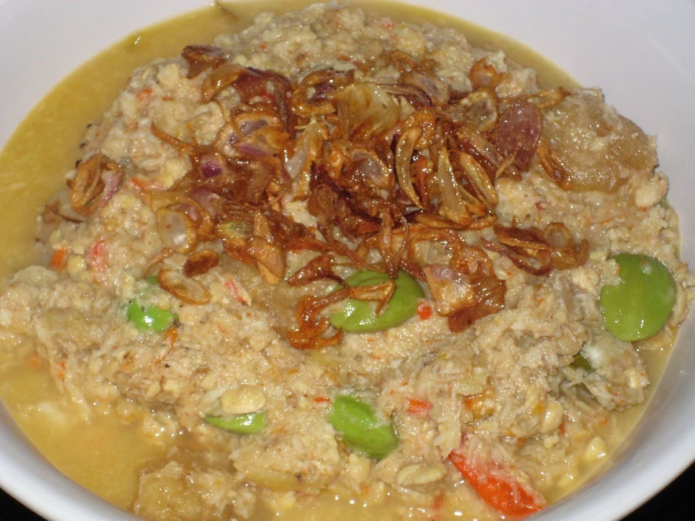
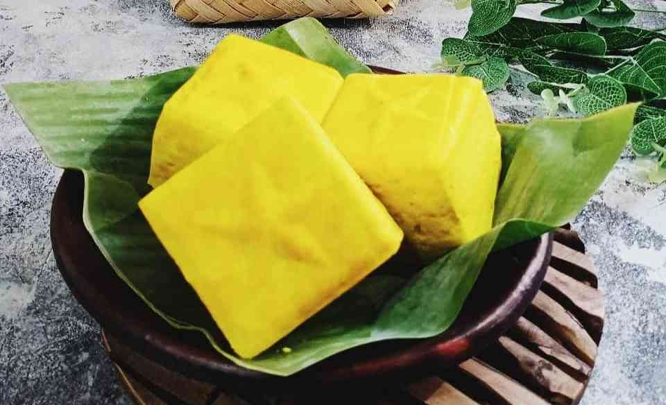
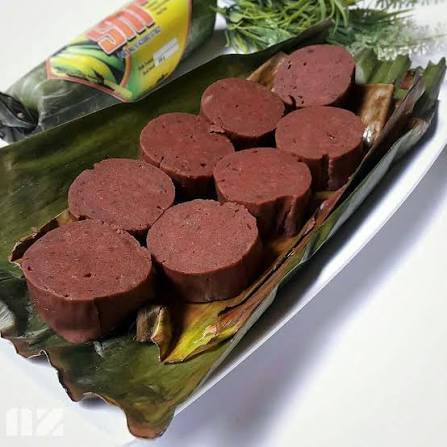

the fermented tempeh, blended with chili and other spices, a complement for rice, vegetables, or other side dish.

A tofu, soaked and cooked on turmeric water giving it natural yellow color

The dish made by banana dough, tastes sweet and soft